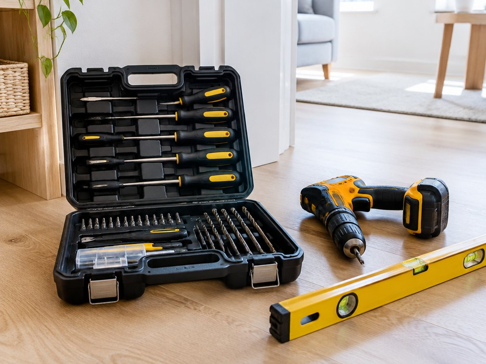
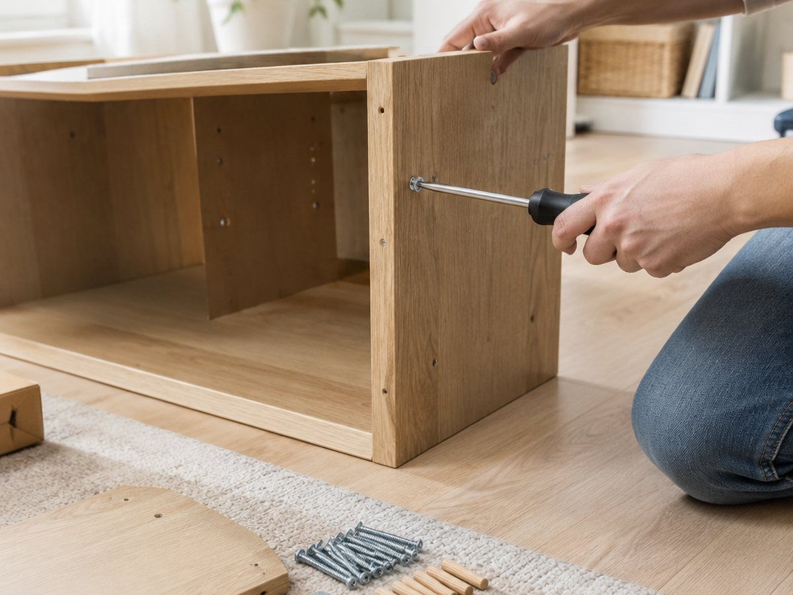
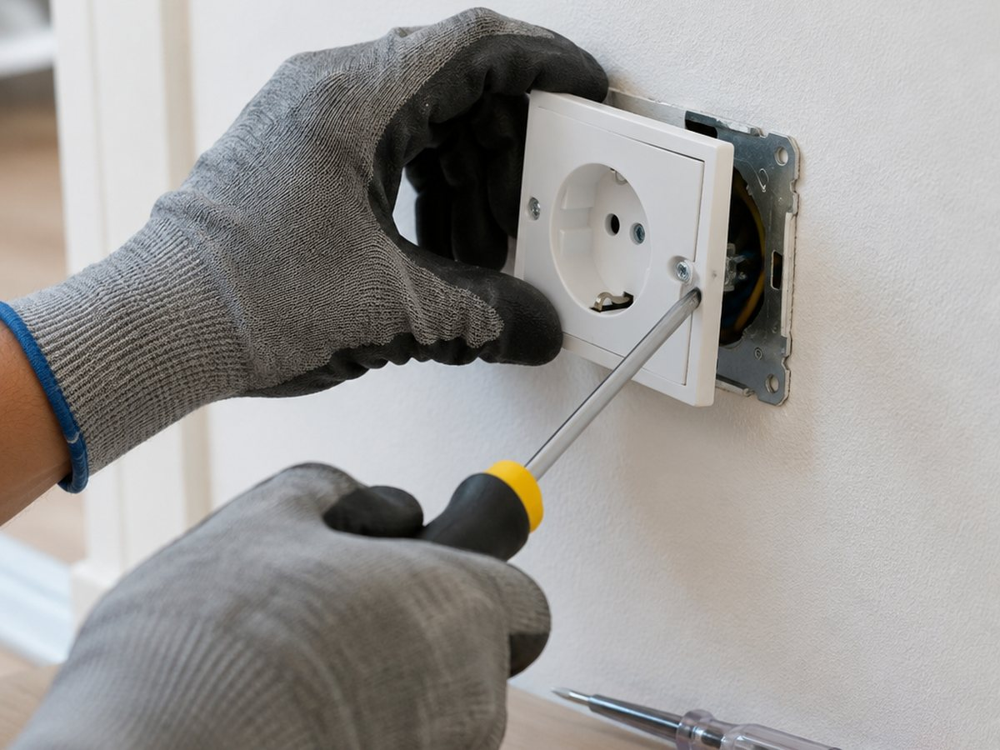

Какие бытовые работы выполняю
Сборка мебели и регулировка фасадов, сантехника, розетки и свет, балкон, навеска полок, мелкий ремонт. Если работы нет в списке — напишите, обсудим.

Собрать, отрегулировать, поправить
Кухонные дверцы провисли, ящик заедает, ручка держится на одном винте — это как раз та работа, которую откладывают месяцами.
Соберу мебель по инструкции, отрегулирую петли и доводчики, поменяю фурнитуру. Если деталь сломана — скажу, что именно нужно заменить.

Установить, заменить, подтянуть
Работы с краном, смесителем и сливом на кухне и в ванной.
| Работа | Что делаю |
|---|---|
| Установить кран или смеситель | Демонтаж старого, монтаж нового, подключение к воде, проверка на подтекание |
| Заменить сифон | Замена сливной арматуры, проверка уклона и герметичности |
| Подключить стиральную машину | Подключение к воде и сливу, проверка соединений |
| Устранить подтекание | Замена прокладок и гибкой подводки, подтяжка соединений |

Мелкая электрика по дому
Замена розеток и выключателей, навеска светильников и люстры, подключение бра. Работаю с обесточенной линией и проверяю результат на месте.
Если проблема глубже — например, не работает целая линия или пахнет палёной проводкой — честно скажу, что здесь нужен электрик с допуском, и не буду «пробовать».
Подшивка и обустройство
Подшить балкон, поставить полки, закрепить сушилку или кронштейны.
Подшивка потолка и стен, крепление панелей, аккуратные стыки.
Полки, шкафчики, крючки и сушилки на балконе.
Кронштейны, направляющие, карнизы — под материал стены.
Заглушки, уплотнители, мелкая подгонка по месту.
Полки, карнизы, зеркала
Главное здесь — крепёж под материал стены, а не «на один дюбель на глаз».
Написать, что нужно
Перечислите работы списком — так удобнее и вам, и мне: видно весь объём и можно сделать за один заход.
Фото и размеры помогут сразу сказать по времени.
Написать мастеру
Опишите работу, добавьте фото и размеры, если они важны. Отвечу и предложу удобное время.
Опишите работу — договоримся о времени
Мелкие бытовые работы: фасады, мебель, ручки, кран, розетки, балкон. Пишите, что нужно сделать, и приложите фото — так проще сразу сказать по срокам.